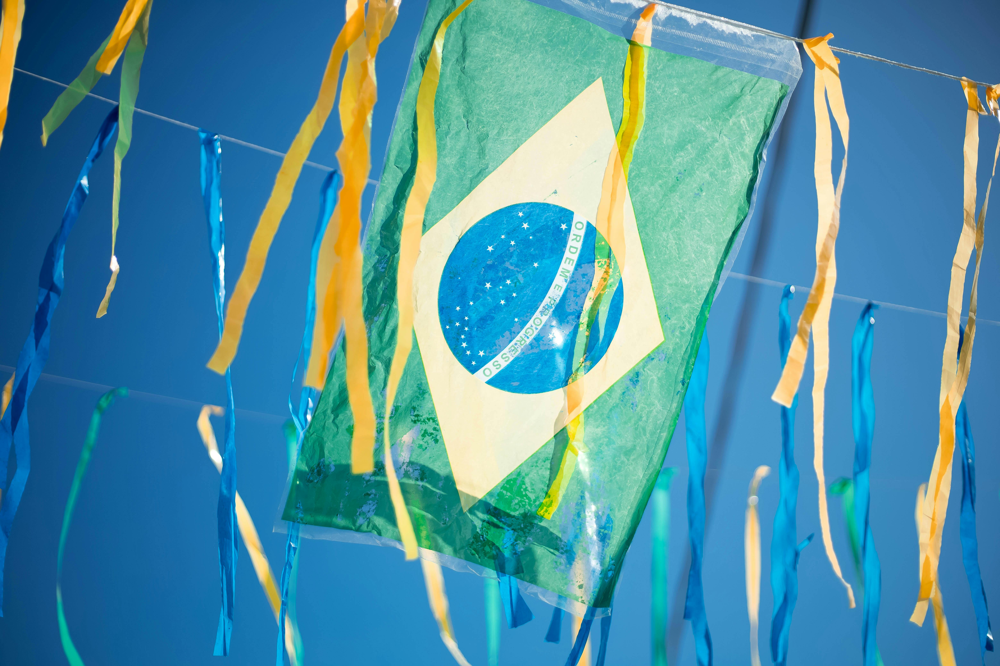
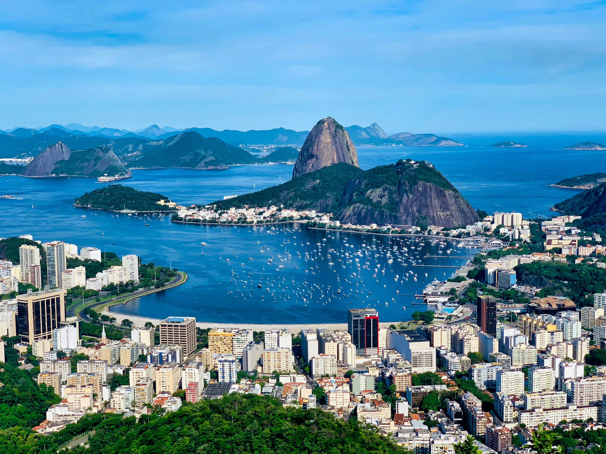
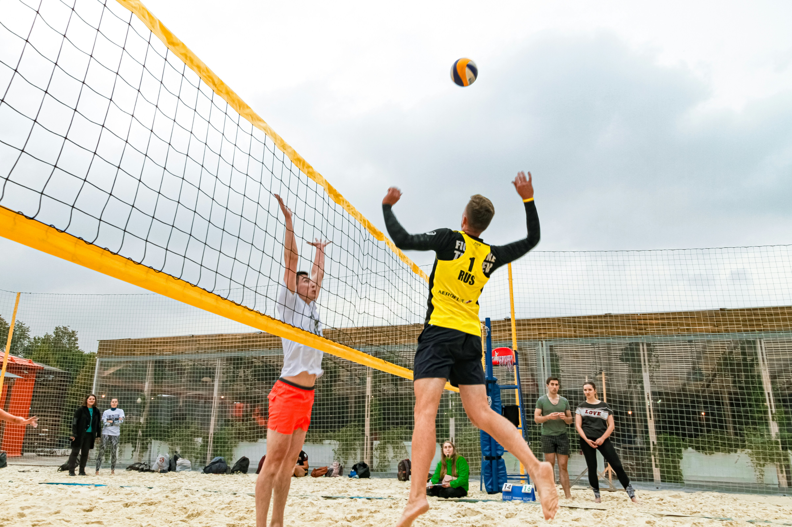
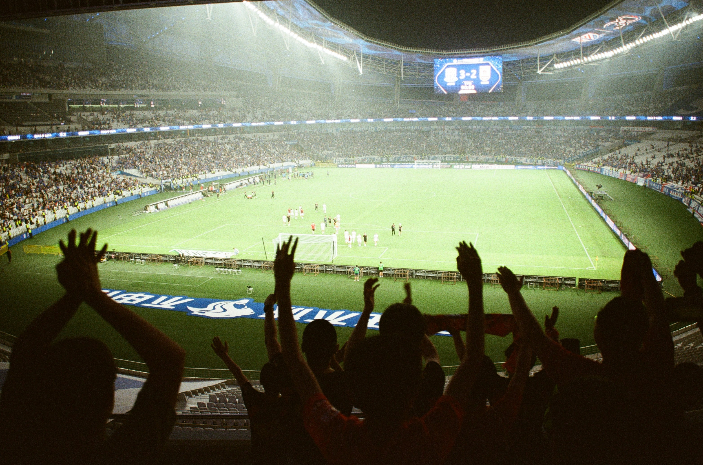

J-O 2016 RIO






Pour la première fois de l'histoire, les Jeux Olympiques foulent le sol de l'Amérique du Sud — une édition portée par la chaleur et l'élan d'un continent entier.
Rio de Janeiro a marqué l'histoire en devenant la première ville sud-américaine à accueillir les Jeux Olympiques d'été. Une victoire symbolique pour un continent de 400 millions d'habitants qui attendait ce moment depuis plus d'un siècle. La Cidade Maravilhosa a relevé le défi avec passion, couleurs et samba.
Barra da Tijuca, Deodoro, Copacabana, Maracanã — Rio a mis en scène ses plus beaux décors naturels. La plage de Copacabana a accueilli le beach-volley sous les étoiles, et la baie de Guanabara a offert au monde un panorama du Christ Rédempteur surplombant les épreuves de voile.
Rio 2016 a introduit le golf et le rugby à 7 au programme olympique, deux disciplines qui ont immédiatement électrisé le public. Le retour du golf après 112 ans d'absence, et la première médaille d'or de rugby féminin attribuée à l'Australie, ont marqué les esprits.
Les Jeux ont eu lieu dans un contexte tendu : crise économique brésilienne, épidémie de virus Zika, et tensions politiques autour de la présidente Dilma Rousseff. Pourtant, une fois le coup d'envoi donné, la magie olympique a transcendé ces difficultés, offering au monde des instants inoubliables.
« Le sport a le pouvoir de changer le monde. Il a le pouvoir d'inspirer, le pouvoir d'unir les gens d'une façon que peu de choses peuvent égaler. »
— Nelson Mandela
5 Août — 21 Août 2016
Le 5 août 2016, le stade du Maracanã — temple du football brésilien — a vibré au rythme d'une cérémonie d'ouverture explosive et poétique, devant plus de 78 000 spectateurs et des milliards de téléspectateurs dans le monde entier.
Sous la direction artistique de Fernando Meirelles, la cérémonie a retracé 500 ans d'histoire du Brésil : les peuples indigènes, la traite des esclaves, l'immigration européenne et asiatique, et l'émergence d'une culture métissée unique au monde. Un message fort sur la diversité et le métissage comme force d'une nation.
Le spectacle a rendu hommage à la crise climatique avec une séquence choc sur la déforestation et la montée des eaux, mêlant batucada, bossa nova et samba en un tourbillon de couleurs. La chanteuse Gisele Bündchen a traversé le stade au son d'The Girl from Ipanema, dans une des images les plus iconiques de la cérémonie.
La flamme olympique a été allumée par Vanderlei Cordeiro de Lima, marathonien brésilien célèbre pour avoir été victime d'une intrusion lors des JO d'Athènes 2004, et lauréat du Prix Pierre de Coubertin pour son esprit sportif exemplaire.
Histoire, règles fondamentales et athlètes légendaires qui ont marqué l'édition de Rio 2016

La natation olympique dispute ses épreuves en bassin de 50 mètres. Elle regroupe quatre nages : crawl, dos, brasse et papillon, ainsi que la nage libre et les quatre nages.
Construite spécialement pour les Jeux à Barra da Tijuca, la piscine olympique a été le théâtre des derniers exploits du plus grand nageur de tous les temps.

À 31 ans, Phelps a conclu sa carrière olympique avec 5 médailles d'or et 1 argent à Rio, portant son total historique à 23 titres olympiques, un record absolu jamais égalé.

Le rugby à sept é une version accélérée du rugby à XV : sept joueurs par équipe, deux mi-temps de sept minutes, un jeu ouvert et physique qui favorise la vitesse et l'improvisation.
En faisant ses débuts olympiques à Rio, le rugby à 7 a immédiatement conquis le public avec son rythme effréné et ses renversements de situation spectaculaires, en particulier dans le tournoi masculin.

Dans un tournoi historique, les Fidjiens ont dominé tous leurs adversaires avec une médaille d'or remportée en finale 43-7 face à la Grande-Bretagne, offrant à leur pays la toute première médaille olympique de son histoire.

Le volleyball olympique combine une intensité physique extrême, des smashs fulgurants et une coordination d'équipe millimétrée. Les joueurs s'affrontent au cours de rallyes spectaculaires où le ballon ne doit jamais toucher le sol.
Ce temple mythique du volley brésilien a vibré au rythme d'une ferveur locale incroyable, poussant l'équipe nationale masculine vers un sacre olympique historique à domicile.

À 40 ans, le libéro mythique a guidé le Brésil vers la médaille d'or à domicile. Élu MVP du tournoi, « Serginho » a pris sa retraite internationale en devenant le joueur de volley le plus médaillé de l'histoire olympique.

Le football est l'une des disciplines les plus suivies aux JO. Le tournoi masculin oppose des équipes de moins de 23 ans avec trois joueurs plus âgés, garantissant la fraîcheur et la compétitivité.
Après la Mineirazo de 2014 (7-1 face à l'Allemagne), le Brésil portait le poids d'une nation entière sur ses épaules dans son propre stade mythique — le Maracanã.

Capitaine de la Seleção, Neymar a inscrit le but décisif en finale aux tirs au but face à l'Allemagne, offrant au Brésil sa toute première médaille d'or olympique en football, dans une explosion de joie nationale incommensurable.
Pays et athlètes qui ont marqué les Jeux Olympiques de Rio 2016
Classement par nombre d'or — Rio 2016
Les performances individuelles les plus marquantes
Sources : Comité International Olympique (CIO) · Rio 2016 · données officielles finales
Survolez un site pour découvrir les épreuves et médailles qui s'y sont jouées
Le cœur battant des Jeux de 2016, construit sur un ancien circuit de Formule 1, regroupant neuf infrastructures sportives de pointe connectées par une immense dalle olympique.
Le temple mythique du football mondial a accueilli les moments les plus symboliques de Rio 2016, notamment le tout premier titre olympique de l'histoire de la Seleção masculine.
Surnommé « le petit Maracanã », cette arène historique couverte adjacente au grand stade a vibré au rythme de la passion locale pour le volley-ball indoor.
Situé en plein centre-ville sous le regard du Corcovado, ce lagon naturel a offert l'un des décors les plus photogéniques et spectaculaires des Jeux olympiques.
Un stade temporaire de 12 000 places érigé directement sur le sable mythique de la plage de Copacabana, célébrant le sport roi de la culture carioca.
Deuxième grand pôle des Jeux, ce complexe multi-sports situé au nord-ouest a permis de redynamiser une ancienne zone militaire pour les disciplines de plein air et extrêmes.
Bien qu'il ne s'agisse pas d'une arène fermée, la célèbre statue du Christ Rédempteur a servi de toile de fond spectaculaire pour les épreuves de cyclisme sur route, le tracé exigeant de la Vista Chinesa grimpant ses flancs.
Le monument emblématique de Rio veillait directement sur la marina de Glória et les régates de voile, offrant un couloir de vent unique et un défi tactique mémorable pour les skippers mondiaux.
Aménagé temporairement dans l'axe de la perspective du Grand Canal, le domaine national du Roi-Soleil a offert un cadre majestueux et chargé d'histoire aux sports équestres mondiaux.
Poursuivez le voyage